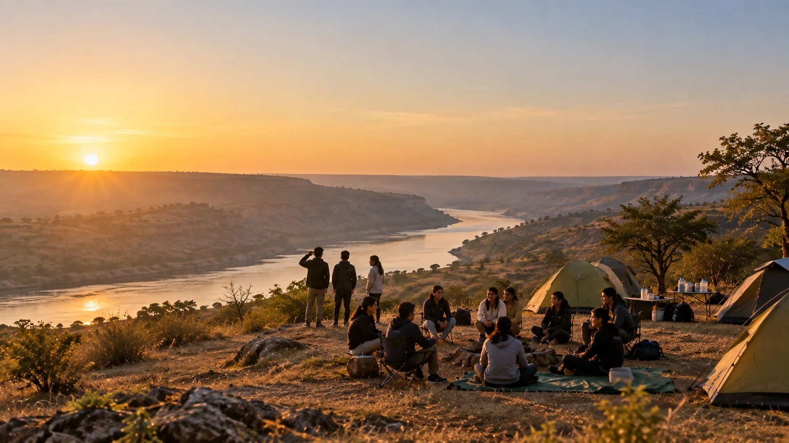

Himachal Pradesh
Bir Expedition
India's premier paragliding destination, where Himalayan terrain meets Tibetan culture. Courage, physical confidence, cultural immersion.
Enquire about the Bir ExpeditionIndia's premier paragliding destination, where Himalayan terrain meets Tibetan culture. Courage, physical confidence, cultural immersion.
Enquire about the Bir Expedition
One of India's last untamed river landscapes — ravines, clean water, gharials and Gangetic dolphins. Ecology, self-reliance, teamwork.
Enquire about the Chambal ExpeditionReal situations outdoors that demand effort and decision-making, not simulated ones.
Students lead, support, and depend on each other; there's no one else to do it for them.
Daily guided reflection circles turn an experience into awareness and perspective.
Confidence that develops through experience is the kind that actually stays.
Experienced faculty with students at every stage, structured oversight throughout.
Carefully planned routes and controlled environments, reviewed before every departure.
First-aid readiness on site and emergency coordination with the nearest facilities.
Group sizes kept small so every student gets personal attention throughout.
Trained across mountaineering, skiing, paragliding, rafting, kayaking, scuba diving and surfing through leading institutes in India and abroad — IHCAE Sikkim, HMI Darjeeling, IISM Kargil & Srinagar, and international programmes in Thailand and Bali.
Acuity Edge is built on his belief that real growth comes through challenge, responsibility and reflection — beyond the classroom.
The full storyReal situations outdoors that demand effort and decision-making, not simulated ones. A 70-foot waterfall reached over boulders and river crossings. A tandem launch where the ground drops away. Nothing is staged, and nothing is unsupervised.
Students lead, support, and depend on each other; there's no one else to do it for them. Tents go up in teams. Dinner is cooked over a live fire by the people eating it. A student who carries the group's water carries the group.
Daily guided reflection circles turn an experience into awareness and perspective. Every expedition day ends in a circle led by the expedition team — what happened, what it asked of you, what you'd do differently tomorrow. Without this, an expedition is only a trip.
Confidence that develops through experience is the kind that actually stays. Students return having done something they weren't sure they could do, with a group that watched them do it. That doesn't fade at the end of term.
"Natti isn't watched from the sidelines; it's danced."
Trained across mountaineering, skiing, paragliding, rafting, kayaking, scuba diving, and surfing through leading institutes in India and abroad — including IHCAE (Sikkim), HMI (Darjeeling), IISM (Kargil & Srinagar), and major international programmes in Thailand and Bali.
A graduate of Hansraj College, University of Delhi.
Acuity Edge is built on his belief that real growth comes through challenge, responsibility, and reflection — beyond the classroom.
Bir is India's premier paragliding destination — a meeting point of Himalayan terrain and Tibetan culture. Students move through structured, supervised outdoor experiences designed as deliberate learning opportunities in courage, physical confidence, and cultural immersion.
Engaging with natural Himalayan terrain to build movement confidence and adaptability.
Facing fear in a structured, instructor-led environment through tandem paragliding.
Exposure to Tibetan and Himachali traditions, monastic life, and community celebration.
Navigating a full expedition itinerary and processing the experience through guided reflection circles.
Guided instruction in trail safety, group movement, and supervised outdoor activity.
Arrival, breakfast, rest before the day's first activity.
With certified pilots, in sequence, one student at a time.
Stillness and discipline — a deliberate contrast to the morning's adrenaline.
Momos, thukpa, butter tea.
Guided by the expedition team, then lights out.
"There's a specific kind of quiet right before your feet leave the ground. Then Bir opens up beneath you — ridgelines, valley, sky — and courage stops being a word and starts being a feeling."
Boulders, river crossings, and a 70-foot waterfall. Earned views hit differently.
The traditional communal meal, eaten the way it's meant to be.
Natti isn't watched from the sidelines; it's danced.
Student reflections and certificate presentation, then departure.
"Earned views hit differently."
Paragliding timing is weather and thermal-dependent; a backup window is built into Day One to ensure every student flies. All activities are supervised by the Acuity Edge expedition team.
Dramatic ravines, clean water, and rare biodiversity, including the critically endangered gharial and the Gangetic dolphin. The expedition is built around ecology, self-reliance, teamwork, and cultural exploration.
Working in small expedition teams across shelter-building, cooking, cycling, and shared outdoor experiences.
Direct exposure to a rare river ecosystem: gharials, Gangetic dolphins, native birdlife.
Pitching tents, cooking outdoors, navigating a full expedition itinerary.
Traditional Chambal food, the heritage of Bateshwar, meaningful regional immersion.
Guided instruction in fire safety, river safety, and basic camp-craft.
No crew, no staging. Both clips were filmed by our expedition team while the cohort was on the ground — the ravine at first light, and the walk down to the sandbars with the naturalist.
Schools choose the format that fits their calendar. Supervision, ratios and the closing circle are identical in both.
In small teams. Whatever goes up is what you sleep in.
Chulhe ki Roti and regional chutneys.
Gharials, dolphins, turtles, birdlife.
Around a live fire, supervised throughout.
Then lights out.
Out before the heat, breakfast at a scenic viewpoint.
A guided history and architecture session at the temple complex.
Music, stories, reflection — then overnight at camp.
Camp is left the way it was found.
Student reflections, certificate presentation, group photo.
Transportation to and from the Chambal basecamp is arranged separately by the school. All activities are supervised by the Acuity Edge expedition team.
A call to understand your cohort, intent and constraints.
A written programme with itinerary, supervision plan and inclusions.
Confirmed against your academic calendar and the season.
For accompanying faculty and, where you'd like, for parents.
Run by the Acuity Edge expedition team, start to finish.
What was covered, how the cohort responded, what we'd adjust.
One teacher for every 10 students — all expenses covered by Acuity Edge.
Your teachers travel, eat and stay at our cost. They know the students; we know the terrain. Accompanying faculty join the pre-departure briefing, hold pastoral responsibility for their cohort, and take part in the reflection circles rather than observing them.
Experienced faculty and structured oversight, with a named expedition lead accountable for the cohort from pickup to drop-off. Every activity has a designated supervisor who briefs the group before it begins and accounts for every student when it ends. Your own teachers travel with us — one for every ten students — and hold pastoral responsibility throughout.
Carefully planned routes and controlled environments. Every trek line, river stretch and launch site is walked or run by our team before students arrive, and reviewed again against conditions on the day. Weather-dependent activities carry built-in backup windows rather than pressure to proceed — paragliding runs when the thermals allow it, not when the schedule says so. Adventure activities are delivered with certified operators: tandem pilots, certified local trek guides, and a naturalist on the river.
First-aid readiness on site and emergency coordination off it. Kits travel with the group, not just with the vehicle. Medical and dietary declarations are collected before departure and held by the expedition lead, so allergies and conditions are known before the first meal is served. Nearest facilities and evacuation routes are confirmed for each basecamp ahead of every departure, and the school has a contact who answers for the full duration.
Group sizes are kept small deliberately, and not only for safety. A reflection circle only works when everyone in it can speak. Teams small enough to pitch a tent together are small enough for the expedition team to notice the student who has gone quiet, the one who is pushing too hard, and the one who needs to be asked twice.
Supervised throughout: every activity is briefed, staffed and closed out by the expedition team.
Photographs and clips from Bir and the Chambal, shot by our team while the expeditions were running.
"Earned views hit differently."
The Natti starts as a demonstration and stops being one about four minutes in, when the circle opens and nobody is allowed to stay seated.